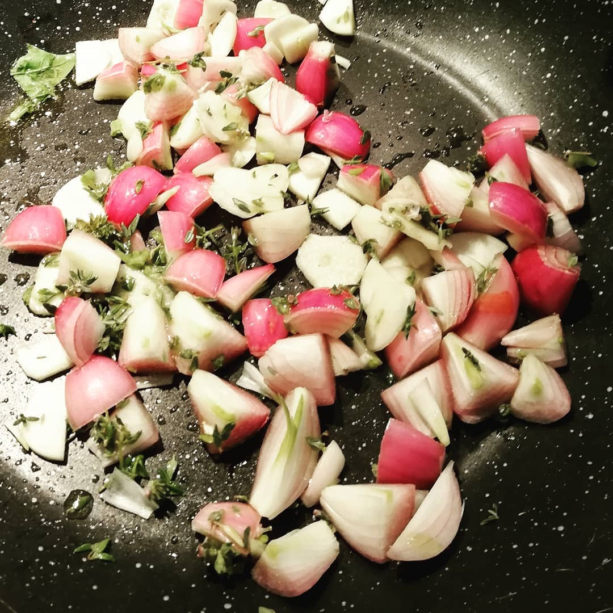
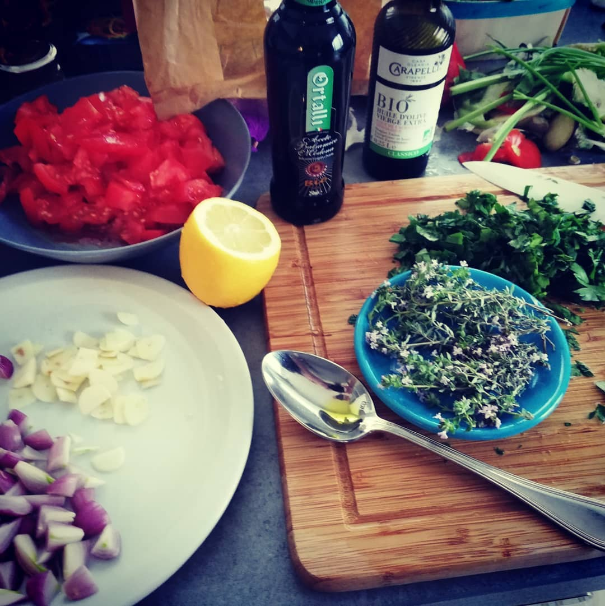
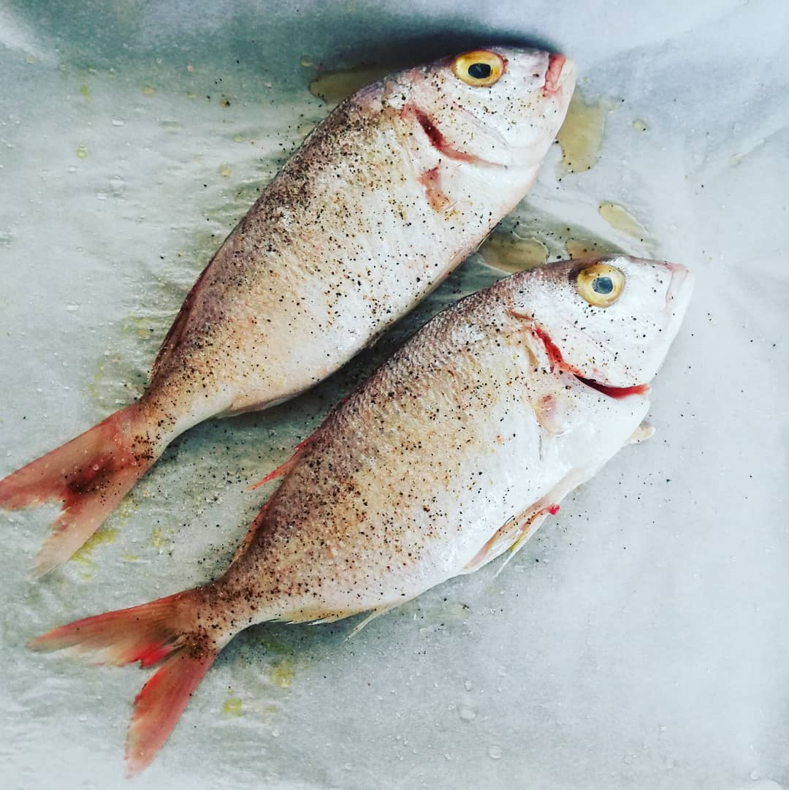

When in the Provence, make Ratatouille.
Imported from Instagram.
When in the Provence, make Ratatouille. The nicest part of cooking is sometimes the beginning, when onions and garlic go into the oil. This time there was also wild thyme involved, which Anneli had found in the Verdon Canyon. Why is there still no tech to record smells?
#noratatouilleisnotratstew


